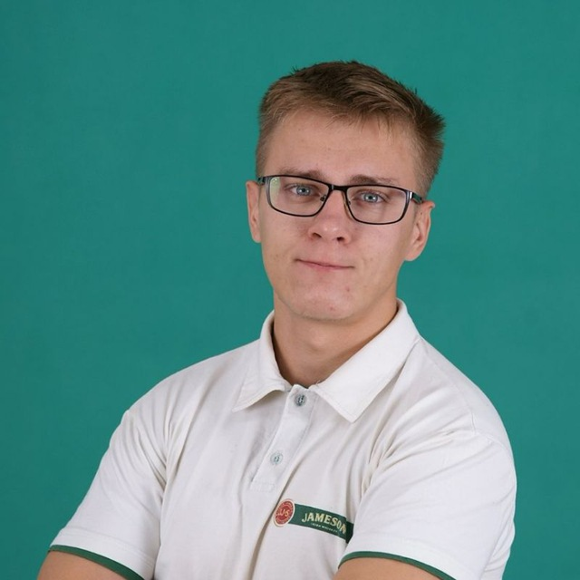

Резюме: Левченко Максим

Дата народження: 30 жовтня 1998 рік
Місто: Київ/Боярка
Телефон: (099)-069-93-69, (098)-339-09-86
Електронна пошта: maximich.1998@gmail.com
Бажаний рівень ЗП: від 15000 грн.
Освіта
-
2014 - 2018 Відокремлений підрозділ Національного університету біоресурсів і природокористування України «Боярський коледж екології і природних ресурсів» (освітньо-кваліфікаційний рівень «молодший спеціаліст», кваліфікація: технік-програміст, спеціальність «Обслуговування програмних систем і комплексів»);
-
2016 - 2017 Сертифікат Школи програмування «ІТ-Еліт», курс «Основи сайтобудування»
-
2018 - 2020 - Національний університет біоресурсів і природокористування України, факультет інформаційних технологій (кваліфікація: ступінь вищої освіти бакалавр, спеціальність «Комп'ютерні науки»).
Досвід роботи
Мотузяний парк «Family park» - Інструктор
-
Робота з людьми: одягання страхової амуниції та проведення дітей по трасі з перешкодами;
Суші-бар – Адміністратор
- Робота з грошима;
- Прийом замовлень;
- Продаж страв;
- Догляд за чистотою;
- Контроль якості та наявності продуктів;
Додаткова інформація
Професійні навички:
-
Володіння мовами: Російська - вільно, Українська - рідна, Англійська - середній.
-
Володіння комп'ютером: впевнений користувач.
-
Знання HTML / CSS (Сертифікат Школи програмування «ІТ-Еліт», курс «Основи сайтобудування»).
-
Знання Adobe Photoshop.
Особливі якості:
- Порядний
- Добрий
- Ввічливий
- Чесний
- Відповідальний